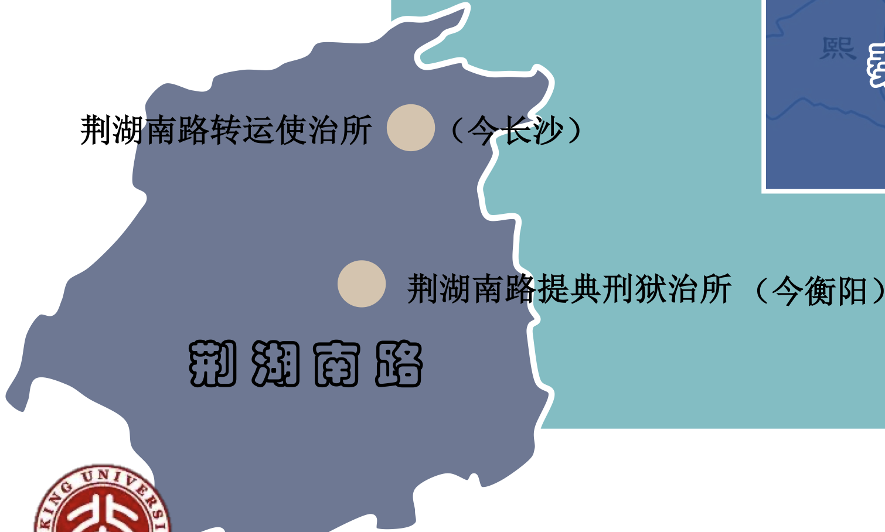
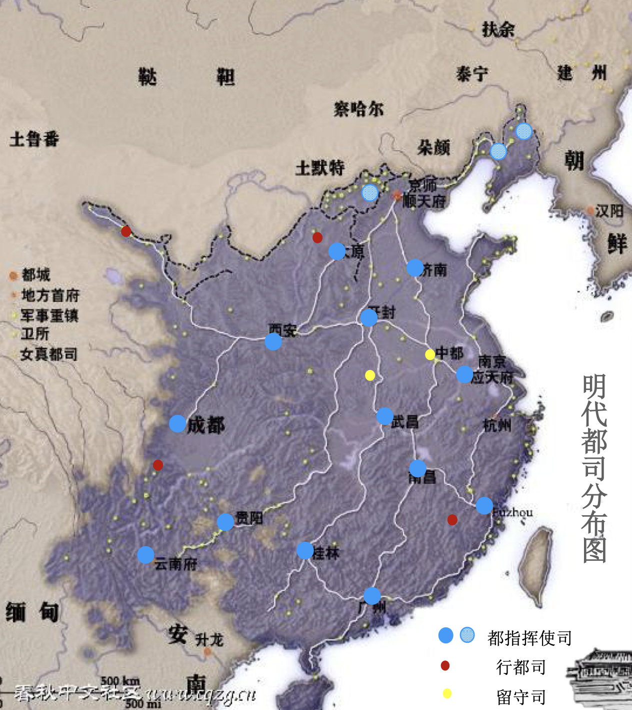

唐朝
- 唐前期，州、县两级制。贞观元年分天下为十道，开元二十一年改为十五道。“道”为监察区。
- 开元二十一年，设节度使，节度使最初只管军事，与民事无涉，《通鉴》： “景云元年十二月，置河西节度使、支度、营田等使，领 凉、甘、肃、伊、瓜、沙、西七州，治凉州。” 可见最初的节度使只管军事。
- 以安禄山为例，他一人兼任三个节度使（平卢、范阳、河东），这是军权。同时，支度、营田等是财政权，河 北道采访处置使，相当于是省委书记，掌握了行政权。还有闲厩使、陇右群牧史，这个职位掌握了祁连山脚下的优质牧场，可以挑选最精锐的战马。
- 安史之乱之后，40多个节度使地区被称作方镇，逐渐获得了一级行政区的地位：
- 朝集使的废止。朝集使: 唐朝各州（相当于今天的地级市）的刺史（市长），每年都要轮流选派高级官员，在年底带着地方账目和贡品前往首都长安，向中央政府汇报工作，并参加朝廷的元旦大典， 而安史之乱之后，由于方镇武将的权力过大，地方长官不再进京。
- “今县宰之权受制于州牧，州牧之政取则 于使司，迭相拘持不敢专达，虽有政术何由施行。” 这个说的是方镇的军政权过大，导致地方长官不敢专权，甚至不敢施行政务。
- 唐前期依靠租庸调为主要内容的税制，以 近似统收统支的策略，全面掌控财政大权。“安史之 乱”后，中央的财权大部下移，唐德宗建中元年 （780年）实行两税法后，“自国家置两税已来，天 下之财限为三品，一曰上供，二曰留使，三曰留州， 皆量出以为入，定额以给资”。
宋朝
-
重大改革：
-
兵权归上、以文制武 ， 一是吸取唐朝中后期方镇割据的教训，二是赵匡胤本人就是武将篡位，担心别的武将也会篡位。
-
上下相维、轻重相制
- 1）地方行政区是中央官员的 分治区，不是地方官员的施政区。
- 2）使地方各级组织互相牵制，事权分散，区划交叉，中心分离，没有单一的权利机构。
-
-
这个图中可以看到，作为同一个路的官员同事，转运使和提典刑狱的工作地点不一样，这是中央为了防止地方官员互相勾结。

- 宋代的路，就实质而言路是代表中央，置于州县之上的分属性办事机 构；而州、县则是直接牧民的行政区，因此路与州、县属于两个系统。一般来说路的官员都是中央官员下派的。
|
|
- 我国现在采用的行政体系就是仿照宋朝的，确保地方军队不敢造反，由政治监督。
元朝
- 开创行省。
明朝
-
明代最高政区为两京十三布政使司：京师、南京、山东、山西、 河南、陕西、四川、江西、湖广、浙江、福建、广东、广西、云南、 贵州。
-
采用复式结构：（同样的行政名称，可能处在不同的行政层级）
-
山东按察司兼管山东布政司和辽东都司。这个现象可以由地理角度解释，明代辽东与内地之间的交往，只能通过两条道路进行。一条是经山海关与辽西走廊的 陆路，另一条则是经渤海海峡，从山东半岛北部的登州、莱州到达辽东半岛的海路（庙岛列岛）。洪武 初年，明军从登莱地区渡海北上，击败残元势力，将辽东地方纳入明朝治下，而当时辽东 驻军所需的粮食、布匹等后勤物资，也都要通过登辽之间的海路转运获得。在这种密切联 系的基础上，明代辽东的民政与司法事务分别被划归山东布政司下属的辽海东宁分守道， 以及山东按察司下属的辽海东宁分巡道管辖，从而形成了“辽东隶于山东”这一特殊的政 区地理现象。
-
到了明朝后期，边境外族军事压力过大，为了克服三司分权过大，设立了4大总督。🤣
-
为什么天津、威海被称作天津卫、威海卫呢？因为明朝的时候府州县只领民户，另置卫所以统军户，全国卫所千计，分隶两京都督府与十六都指挥使司、五行都指挥使司、二留守司。一般来说，卫大概有5600人，所大概1120人。所以天津卫就是当初有一支卫驻扎在天津，久而久之就流传下来了。
|
|

- 这个图中可以生动的看到明朝的地方各级卫所分布情况。